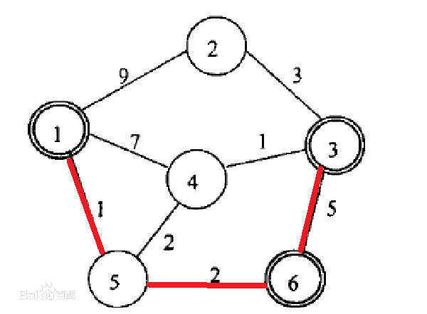
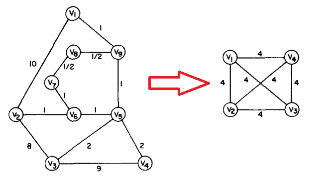
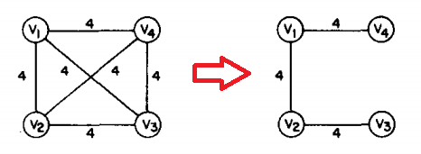
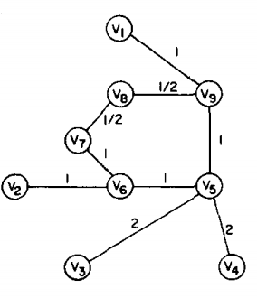
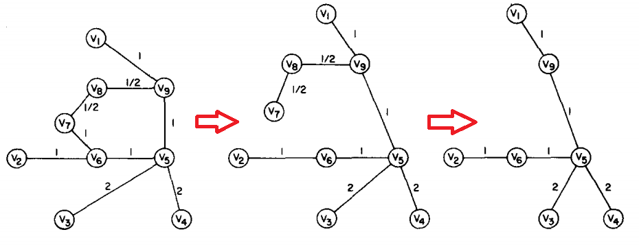
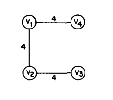
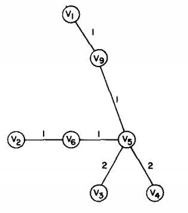

一张无向有权图\(G\)可以表示为\((V,E,d)\)，其中，\(V\)是顶点的集合；\(E\)是边的集合；\(d\)是一个距离函数，负责将每条边映射到一个实数上面，这个实数就代表边的权值。
考虑顶点集\(V\)的一个子集\(S\)，最小\(Steiner\)树问题就是在图\(G\)中找一棵能够生成\(S\)，且权值和最小的生成树。很显然，最小生成树就是当\(V=S\)时最小\(Steiner\)树问题的一个特例。
例如下面这张图，顶点\(1,3,6\)的最小\(Steiner\)树应当为\(1-5-6-3\):

很不幸的是，最小\(Steiner\)树问题已经被证明是一个\(NP\)完全问题。在图的规模比较小时，可以用动态规划解决；
当图的规模变大，研究的重点就放在了求出一棵近似最小的\(Steiner\)树。
下面来描述一个启发式的求解算法：
-
第一步：在图\(G\)上跑一遍\(Floyd\)，求解出\(S\)上任意两点间的最小距离。将图\(G\)压缩成一个由\(S\)个点构成的完全图\(G_1=(V_1,E_1,d_1)\)，其中任意两个点之间的边的权值就是前面求解出的最短距离。这一步的时间复杂度为\(O(SV^2)\)。
设下面的左图为原图\(G\)，\(S\)集为顶点\(v_1,v_2,v_3,v_4\)，压缩后得到右图\(G_1\)：

-
第二步：求出图\(G_1\)的最小生成树\(T_1\)，这一步时间复杂度为\(O(S^2)\)。

-
第三步：将\(T_1\)的各条边展开成图\(G\)上的边，得到图\(G_s\)。例如，\(v_1v_2\)展开后变为\(v_1v_9v_8v_7v_6v_2\)。这一步时间复杂度为\(O(V)\)。展开后得到了下图：

-
第四步：求出\(G_s\)的最小生成树\(T_s\)，如下面的中图；并去掉不在集合\(S\)中的顶点，得到一棵近似最小\(Steiner\)树\(T_h\)，见下面的右图。这一步的时间复杂度为\(O(V^2)\)。

这个算法流程还是很简单的，下面对其做一些理论的分析。
首先，这个启发式算法的时间复杂度是\(O(SV^2)\)，主要耗费在跑\(Floyd\)构造完全图上面。后面的步骤都是\(O(V^2)\)级别的复杂度。
第二点，来考虑这个算法找到的这棵树究竟有多近似。设上算法找到的近似最小\(Steiner\)树为\(T_h\)，权值和为\(D_h\)，最小\(Steiner\)树为\(T_{min}\)，权值和为\(D_{min}\)。
论文中给出了一个定理：\(D_{h}\lt 2D_{min}\)，下面来直观的证明它。
首先，有第一个观察：图\(G_1\)的最小生成树\(T_1\)的权值\(D_1\)，一定大于等于\(T_h\)的权值\(D_h\)。理由：设\(T_s\)的权值为\(D_s\)，则有\(D_h\leq D_s\leq D_1\)。
所以只需证明\(D_1\lt 2D_{min}\)。
然后，第二个观察：从\(T_1\)中任意取一条边出来，设这条边的顶点为\(v_i,v_j\)，权值为\(d_{ij}\)，则\(d_{ij}\)一定小于等于顶点\(v_i,v_j\)在\(T_{min}\)中的最短路径。理由：\(T_1\)中的每条边都是图\(G\)上对应两点间的最短路径。
下面的左图是\(T_1\)，右图是\(T_{min}\)。在上面的例子中，\(T_h\)刚好等于\(T_{min}\)，所以选用了\(T_h\)的图代表\(T_{min}\)。


为了不引起混淆，用\(v_i\)表示\(T_1\)中的点，用\(v'_i\)表示\(T_{min}\)中的点。
在\(T_1\)中，有\(D_1=v_4v_1+v_1v_2+v_2v_3\)。在\(T_{min}\)中，有
\(D_{min}=v'_1v'_9+v'_9v'_5+v'_2v'_6+v'_6v'_5+v'_3v'_5+v'_4v'_5\)。根据上面的第二点观察，有下面的不等式组：
\(v_4v_1\leq v'_4v'_5+v'_5v'_9+v'_9v'_1\)
\(v_1v_2\leq v'_1v'_9+v'_9v'_5+v'_5v'_6+v'_6v'_2\)
\(v_2v_3\leq v'_2v'_6+v'_6v'_5+v'_5v'_3\)
\(v_3v_4\leq v'_3v'_5+v'_5v'_4\)
对这个不等式组左边求和得到\(D_1+v_3v_4\)，右边求和得到\(2D_{min}\)，故得证。
参考文献：Kou L , Markowsky G , Berman L . A fast algorithm for Steiner trees[J]. Acta Informatica, 1981, 15(2):141-145.